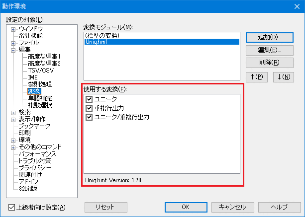

秀丸エディタ Ver.5.00以降では、変換モジュールが使用できます。
変換モジュールは、今まで秀丸エディタ本体で行っていた各種文字変換機能(大文字に変換や、小文字に変換等)を、 外部プログラムで行えるようにしたものです。 標準で添付されているモジュールの他に、 変換モジュールライブラリ にもいくつか登録されています。uniq(重複行削除)もあるので、いろいろ追加しておくと便利です。
標準添付されている変換モジュール(HmFilter)には以下の機能があります。
標準添付以外の変換モジュールを使うには、秀丸エディタに登録する必要があります。
追加する変換モジュール(32bitは"*.hmf"、64bitは"*.hmf64")は、 秀丸エディタ本体と同じ場所(デフォルトは、"C:\Program Files\Hidemaru")に置いてください。
変換モジュールによっては、変換モジュール本体の他に動作に必要なファイルもあるので、 添付されている説明などをよく確認してください。
変換モジュールの登録は、メニューの「その他」->「動作環境」で行います。
「上級者向け設定」にチェックが付いていない場合、チェックする。

「編集」の下に項目が追加されるので、「編集」-「変換」を選択する。

「変換モジュール」に登録済みの変換モジュールが表示されます。(初期状態は"(標準の変換)"のみ)
「追加」で使用したい変換モジュールを指定します。
(秀丸エディタと同じ場所に、変換モジュールをおいた場合は、表示されるはずです。)

「使用する変換」に、追加した変換モジュールがもつ機能が表示されるので、 使用する機能にチェックを入れ、「OK」を押せば、設定が反映されます。

秀丸エディタの「編集」メニューの「変換」に4.で追加した機能が表示されます。 （変換は範囲選択をした状態でないと、有効になりません。）

標準の変換モジュールの場合、「キー割り当て」に対応するコマンド(ﾊﾝｶｸに変換等)があります。 標準以外の変換モジュールの機能については、コマンドは用意されていません(用意できません)。 その為、追加した変換モジュールの機能は、単純に「キー割り当て」で指定する事はできません。
追加した変換モジュールの機能を「キー割り当て」で呼び出すには、
という方法を使います。
変換モジュールを呼び出すには、 「filter文」 を使います。
filter "変換モジュール名", "関数名", "パラメータ(省略可能)"
変換モジュール名: "" を指定した場合は、標準の変換モジュールを使用します。
32bit、64bitの違いを考慮し、拡張子(".hmf"".hmf64")は省略可能です。
(環境や、設定に合わせ適当に判断される。)
ただし、変換モジュール名にパスが含まれる場合には、拡張子の省略はできません。
必ず指定してください。
関数名 : 呼び出す機能名。
パラメータ : なければ省略可能です。変換モジュールの説明や取説に、使い方があれば、その指示に従います。
使い方等説明がない場合は、「キー操作の記録」を使う方法があります。
「キー操作の記録」を使うので、使用する変換モジュールを、あらかじめ秀丸エディタに登録しておく必要があります。
これが、実際にソート(昇順、数値の大小でソート)を実行し、保存したファイルです。 (標準の変換モジュールを使用しているので、変換モジュール名は省略されています。)
setcompatiblemode 0x0F;
filter "" , "Sort" , "000100010001000\"00";そのまま使っても良いのですが、範囲選択しているかどうかのチェックを追加します。 (範囲選択していなければ失敗するだけなので、チェックが必須という事はないです。)
setcompatiblemode 0x0F;
if(!selecting){
message "範囲選択してから実行してください。";
endmacro;
}
filter "" , "Sort" , "000100010001000\"00";
endmacro;このマクロファイルを、「秀丸マクロのいろはにほへと」の「【４】マクロ登録」、 「【５】ショートカットキーへの登録」を参考に、マクロを登録し、キーに割り当ててください。
複数選択状態で、マクロを実行する場合は注意が必要です。
デフォルト状態では、filter文は「複数選択」に対応していません。 たとえば、複数選択状態で実行しても、複数選択した箇所ではなく、 カーソルのある箇所だけ実行されます。
各種命令を「複数選択」に対応させるには、「setcompatiblemode文」を使います。
setcompatiblemode 文のフラグには、
0x00100000 各種の文を複数選択に対応した動作にします。があるので、setcompatiblemode文 に このフラグをセットし、マクロに追加しておけば、 複数選択に対応させることが可能です。
説明では秀丸エディタ本体と同じ場所に置きましたが、実際は何処に置いても登録してしまえば、 秀丸エディタ本体からは問題なく使用できます。
問題(というかチョット面倒？)になるのは、マクロが絡む場合です。
「キー操作の記録」を使うには、変換モジュールの登録は必要ですが、マクロから変換モジュールを呼び出すだけなら、登録自体は不要です。 その為、「キー操作の記録」を使わずにマクロを作成する場合、変換モジュール名の記述方法に注意が必要です。
秀丸エディタ本体と同じ場所に配置した場合
filter "HmFilter" , "Sort" , "〜"のように、変換モジュール名を指定すればいい。拡張子が無くても、設定や環境に合わせ、適当に判断されます。 (秀丸エディタと同じ場所に変換モジュールを置いても、モジュール名の指定にパスが含まれると、拡張子の省略はできません。)
秀丸エディタ本体とは別に配置した場合
filter "C:\\macro\\module\\HmFilter.hmf" , "Sort" , "〜"のように、変換モジュール名にフルパスを指定しないと、秀丸エディタが変換モジュールを読み込めません。 (拡張子の省略はできないので、必ず指定してください)
秀丸エディタ本体とは別に配置した場合、「キー操作の記録」を行うと、変換モジュール名はフルパス(拡張子付き)で記録されるので、 「キー操作の記録」を使って雛形のマクロを作る方法をお勧めします。
変換モジュールは、
という拡張子で識別されます。
通常、32bit版秀丸エディタは"*.hmf"、64bit版秀丸エディタは"*.hmf64"しか使えません。 しかし、64bit版秀丸エディタは設定次第で32bit用変換モジュールを使用する事ができます。 (逆の32bit版秀丸エディタで、64bit変換モジュールを使う事は出来ません。)
64bit版秀丸エディタだけにある、「動作環境」-「64bit版」-「32bit版との互換性」の 「32bit変換モジュール(*.hmf)を動作可能にする。」のチェックを ON にしてください。 これで、64bit版秀丸エディタで、32bit版変換モジュールが使用可能になります。 (ただし、32bit版変換モジュールが正常に動作する保証はありません。)

秀丸エディタ本体で変換モジュールを使う場合
32bit用変換モジュールを登録してある場合、チェックを「OFF」にすると、変換メニューに表示されなくなり、 使用できなくなります。
マクロや置換から使用する場合
64bit/32bit版両方の変換モジュールがあり、拡張子が省略されていた場合は、 チェックが「ON」でも、64bit版が優先的に使用されます。
拡張子が指定されていた場合は、指定されたモジュールを読み込みます。 チェックが「OFF」の状態で、32bit版変換モジュールを指定すると、実行に失敗します。(変換自体行われない。)
秀丸エディタ Ver.8.13より、置換時、検索結果に対し、変換モジュールの機能を実行できるようになりました。
これで何ができるかというと、検索でマッチした箇所を、大文字/小文字/全角/半角へ変換する事が可能になります。 (検索にマッチした箇所に、変換モジュールが持つ機能を実行する。)
詳細は、「知っていると便利な秀丸の機能」の「●置換」にある、 [変換モジュールを使った置換]を参照してください。
ただし、使用する変換モジュールが秀丸エディタ本体と同じ場所にない場合、 マクロと同じくモジュール名にフルパスを指定する必要があります。
変換モジュールの実体はDLLなので、自分で作ることも可能です。
秀丸エディタのダウンロードに、 「変換モジュール開発キットおよびサンプル変換モジュール」があるので、参考にしてください。